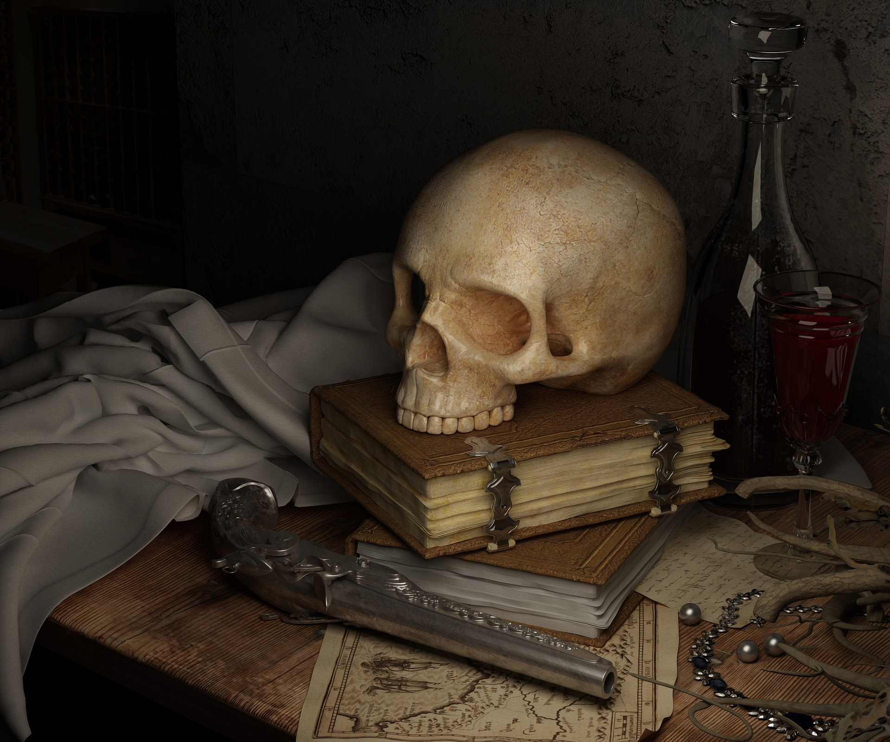

PRESENTACION
En está página encontraras reseñas de libros, clasificados dependiendo de su temática.
Tenemos desde novela negra hasta los libros más clásicos pasando por algo de romanticismo mezclandolo con un poquito de fantasía.
También podremos encontrar las noticias más actuales relacionadas con el mundo de la lectura y ¡Mucho más!
CATEGORÍAS
Fantasía
Romántica
Clásicos